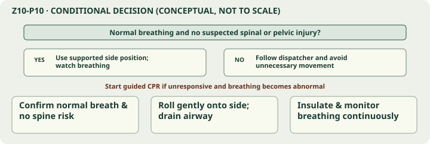

Z10-P10 · Wilderness medicine · New manuscript
Position a breathing unresponsive patient in a stable recovery posture
Protect the open airway of an unresponsive person who is breathing normally while awaiting professional rescue.
When it applies · Unresponsive person breathing normally with NO suspected head, neck, or spinal trauma.
Equipment · Insulating ground pad or folded jacket beneath the patient and watch to monitor breathing.

Actions
- Call 911 and check for normal breathing. For suspected neck, back, hip or pelvic injury, avoid unnecessary movement and follow the dispatcher if the airway is threatened.[M22, M03]
- Roll the person gently onto their side with the top knee bent forward for stability and the head angled slightly downward so saliva or vomit drains out of the mouth rather than blocking the airway.[M22]
- Stay with the person and continuously watch their breathing. Gasping is abnormal. If breathing stops or becomes abnormal, roll them onto their back and start dispatcher-guided CPR.[M22, M03]
Failure recognition · Leaving the person unmonitored in a side position can delay recognition of respiratory arrest.[M22]
Verify · Confirm the chest rises smoothly, the mouth angles slightly downward to drain, and ground insulation is beneath the torso.[M22, E05]
Stop or change course · If breathing stops or becomes abnormal gasping, roll the person promptly onto their back and initiate 911 dispatcher-guided CPR immediately.[M22, M03]
Evidence and editorial notes
- E05 · NWS · What To Do If You're Caught in a Winter Storm (current web edition)
- Section: Outside and find shelter · Conditions: Cold, wet or windy winter conditions
Support: Block wind, stay dry and keep off cold ground. Keep exposure reduction separate from making a fire.
Limitations: Improvised windbreaks do not provide rated thermal protection or snow-load capacity. · Conflicting evidence: None; aligns with CDC-H.
Editorial note: Separates wind, ground, and moisture heat-loss pathways. · Specialist reviewer: Cold-weather shelter specialist
Primary source · checked 2026-11-24 - M03 · American Heart Association · 2025 Adult Basic Life Support (2025)
- Section: Figure 2 Adult Basic Life Support Algorithm for Lay Rescuers; 6.1 Recognition of Cardiac Arrest · Conditions: Unresponsive adult with absent or abnormal breathing; early dispatch and AED access
Support: Recognize gasps as abnormal, activate EMS, start CPR and use an AED promptly. Follow prompts and resume after analysis or shock.
Limitations: Pediatric and drowning arrest require their own training or dispatch prompts; the adult cardiac-arrest algorithm is not all-age guidance. · Conflicting evidence: See A02 claim audit for boundaries.
Editorial note: Distinguishes lay activation and dispatcher-guided CPR from advanced life support. · Specialist reviewer: EMS and resuscitation specialist
Primary source · checked 2026-11-25 - M22 · AHA and American Red Cross · 2024 Guidelines for First Aid (2024)
- Section: Positioning of the Ill or Injured Person · Conditions: Decreased alertness with normal breathing; no suspected neck/back/hip/pelvis injury
Support: Side-lying recovery position can be reasonable; reassess breathing continuously and act if it becomes abnormal.
Limitations: Avoid unnecessary movement after suspected spinal or pelvic injury. A recovery position may delay recognition of apnea if unmonitored. · Conflicting evidence: See A02 claim audit for boundaries.
Editorial note: Anchors airway-protection positioning and handoff documentation. · Specialist reviewer: EMS and emergency medicine
Primary source · checked 2026-11-25
Source lineage · American Red Cross First Aid Steps; new manuscript · Classification · New manuscript.